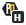

Hey there, hope you're doing fine. I have some useful updates for you.
Updates briefly:
From now on, you can use a keyboard shortcut to activate one mode - you need to enable it first at options page. Command is Alt + x - after you use it for some period of time, please let me know, what do you think, would it better to make shortcut command toggle mode(activate/deactivate) instead. Do you need one more shortcut combination for another mode or you fine with favourite one? Would it be better for you to set up your custom key combination? I would like to hear you thoughts about it!
And to make it easier for you, I started twitter. I am going to write about future updates and start discussions so you can be part of all further developments. A lot depends on your opinion!
Also, now you can see what mode is enabled by looking at the icon. Helps with new keyboard shortcut feature:
- Easy mode

- Hard one.
Thank you for helping me to make the internet a better place to be!